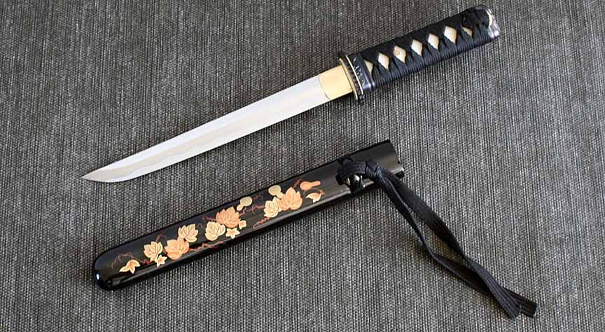

The samurai, members of a powerful military caste in feudal Japan, began as provincial warriors before rising to power in the 12th century with the beginning of the country’s first military dictatorship, known as the shogunate. As servants of the daimyos, or great lords, the samurai backed up the authority of the shogun and gave him power over the mikado (emperor). The samurai would dominate Japanese government and society until the Meiji Restoration of 1868 led to the abolition of the feudal system. Despite being deprived of their traditional privileges, many of the samurai would enter the elite ranks of politics and industry in modern Japan. More importantly, the traditional samurai code of honor, discipline and morality known as bushido – or “the way of the warrior” – was revived and made the basic code of conduct for much of Japanese society.
If you want to know more about the history, then click here.
The life of a samurai can be devided into 4 important events:
In the samurai era there was no direct separation of the private and public. The Samurai was integrated into a certain community by birth and status that was only his left little room for the development of his own personality. The life of the samurai was marked by a strong sense of honor and loyalty. This sense of honor related not only on oneself, but on the whole family and their ancestors. That was passed on from generation to generation and defended down to the blood. A samurai knew no mercy when it came to defending honor; neither against himself nor against other. he samurai had many privileges. He was allowed to carry two swords and, if necessary, these too deploy. He was also allowed to kill a man of low rank without him to report an incident if that person has acted against the law. The samurai but also had a role model function, this required strict self-discipline and a unconditional life according to Bushido. A developed and defined by the samurai, unwritten code of honor to which they submitted unconditionally.
Bushido, consisting of the seven virtues:
If you want to know more about the living of the Samurai, then click here.
The training to become a samurai started at the age of 3. They start by learning figting techniques with a sword that is made of bamboo stick. At the age of 5 it is said they were given real weapons like the Mamori-gatana sword for self defence. Their training proram was designed to teach them the so called bushido way.
Upcoming samurais were usually trained by their father unless they were part of an upper because they had the chance to go to an academy.
This example of a typical training program for a young samurai is similar to the program for the rest of the week. They also had special activities sometimes, these included standing waist deep in snow, going a day without food or sitting under a cold waterfall to prepare them for missions at harsh weather.